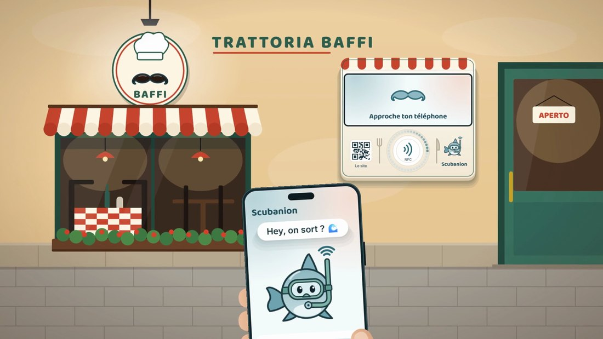
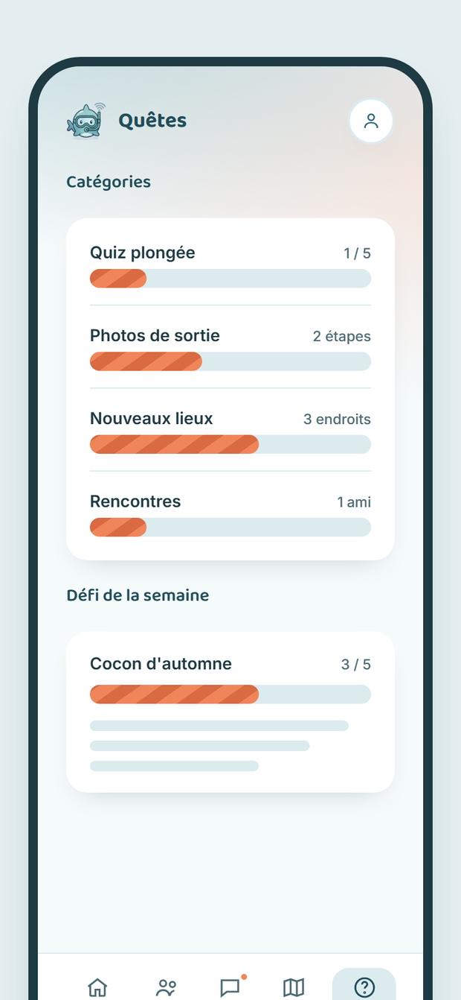
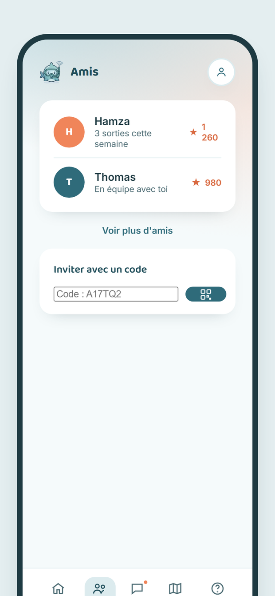
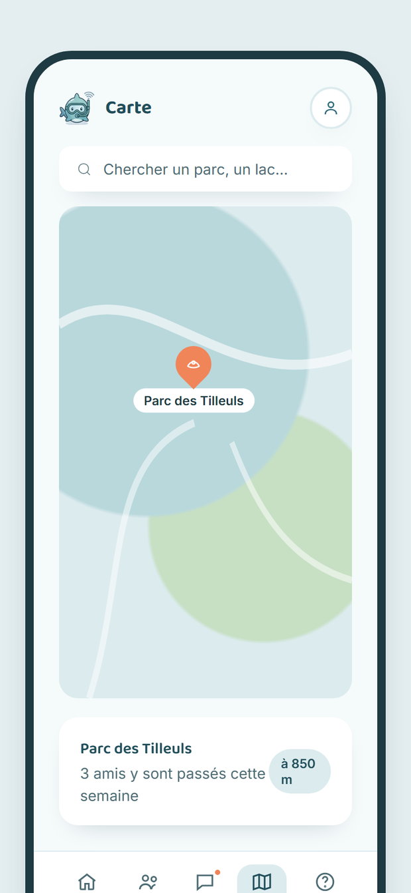
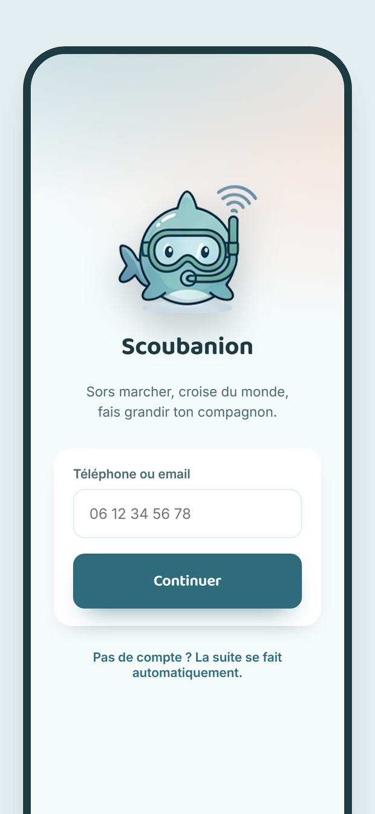

Un compagnon virtuel · Tes vrais pas · Tes vraies rencontres
Découvrir▶Voir le film de la borne
SAÉ BUT3-IoT 2026-27 · BUT 3 Informatique · équipe Scubatana
BANDIERAS Thomas · DALMASSO Evan · KARROUCHI Hamza · LESUEUR Shaleena
Comité directeur : E. Rochard · M.-A. Peraldi · N. Ferry · J. Courtoisier
Soutenance : ⟨ date ⟩
Vous vous reconnaissez dans ces situations ?
🛋️
Une journée entière sans sortir
📱
Cinq heures d'écran par jour
☕
Mille contacts, personne pour un café
À Paris, une étudiante comme Léa fait 3 500 pas par jour seulement
1
Pas par jour de Léa, 20 ans, notre premier persona
3 500 pas
2
Temps d'écran quotidien de cette même étudiante
5 heures
3
18-30 ans à Paris, sur Android, équipés d'un podomètre
≈ 200 000
4
Durée de vie d'une appli de santé avant l'abandon
quelques semaines
Les chiffres 1 et 2 sont ceux de nos personas (Business Model Canvas). Le chiffre 3 est une estimation de marché à sourcer.
ScubanionAccueilLe jeuLes bornesContact
Comment réadapter l'homme à son environnement, et donner aux jeunes urbains une raison de sortir ?

✦✦
ScubanionAccueilLe jeuÉquipeContact
Présentation de l'équipe ✦
TB
Thomas Bandieras
Infrastructure et exploitation CI/CD, supervision, tests
ED
Evan Dalmasso
Produit et relation utilisateur Application mobile
HK
Hamza Karrouchi
Plateforme et données Serveur, API, modèle de données
SL
Shaleena Lesueur
Matériel et parc de bornes Borne IoT, MQTT
+
Commercial B2B
Premier recrutement, au financement d'amorçage
+
Développeur
Second recrutement, pour tenir le rythme produit
Un compagnon vivant
Il ne grandit que si toi tu sors
01
Il grandit avec tes vrais pasLe podomètre du téléphone compte, sans rien acheter
02
Il s'étiole si tu restes chez toiHumeur, santé, niveau : tout dépend de l'activité réelle
03
Il demande, il ne gronde jamais« Hey, on sort ? » plutôt qu'une courbe culpabilisante

Des quêtes dans ton quartier
Le moteur qui envoie vers des lieux réels
01
Une première quête à moins de 500 mLe premier succès tombe le premier jour
02
Quiz, photos de sortie, nouveaux lieuxEt un défi de la semaine, orienté par ton ambition
Des bornes chez nos partenaires
Musées, cafés, parcs : le jeu devient un lieu
01
On approche le téléphoneComme un paiement sans contact : rien à saisir
02
Un objet exclusif au lieuOn ne l'obtient qu'en y étant allé
03
Une preuve de passage pour le lieuC'est ce que nous vendons : un visiteur vérifié


Des amis qu'on croise vraiment
Un réseau social dont le fil est le monde réel
01
On n'écrit qu'aux joueurs croisésOu à ceux de son quartier : se déplacer donne accès
02
Guildes et classement de quartierOn s'inscrit parce que ses voisins y sont
03
Un bonus quand deux compagnons se croisentLe social se vit dehors, pas dans un fil
Le paradoxe du jeune urbain
Connecté en permanence, mais assis et seul
🪑
La sédentarité
Les applications de santé mesurent et affichent. Elles produisent des courbes que personne ne regarde.
Aucun attachement : l'abandon arrive en quelques semaines.
📵
L'isolement
Les réseaux sociaux remplacent la rencontre au lieu de la provoquer.
Mille contacts, et personne à qui proposer un café à dix minutes à pied.
Scubanion
Faire de la sortie un réflexe, pas une corvée
🐋
Attacher plutôt que mesurer
Un être vivant à charge, dont l'état dépend de vous : l'affect remplace la statistique.
Le ressort du Tamagotchi, appliqué à la marche.
🗿
Envoyer dehors, pas retenir
Les récompenses sont attachées à des lieux réels : il faut y aller pour les obtenir.
Et les rencontres ne se font qu'entre joueurs qui se sont croisés.
Nous créons l'application dont NOUS aurions besoin
🚫
Aucune publicité
Un produit qui prétend réduire le temps d'écran ne peut pas vivre de l'attention qu'il capte.
🔒
Aucune revente de données
Pas d'historique de position conservé, suppression du compte en deux gestes.
⚖️
L'XP ne s'achète jamais
Seule l'activité réelle fait progresser. On vend l'apparence, pas la performance.
ScubanionAccueilLe jeuLes bornesContact
📍 Jeux géolocalisés
Audience mondiale, marque installée
On marche pour jouer, et c'est déjà beaucoup
Achats en jeu de 0,99 € à 99 €
Mais on marche les yeux sur l'écran : le lieu n'est qu'une coordonnée, et personne ne s'y rencontre.
✕
VS
🐋 Scubanion
Un compagnon à qui l'on tient
La borne oblige à lever les yeux : la récompense appartient à un lieu
Rencontres physiques : on ne parle qu'à ceux qu'on a croisés
Rien à acheter, aucune publicité, XP jamais vendue
Un client qui paie : le lieu, pour du passage vérifié
✓
Ce qui nous différencie
ScubanionJeux géolocalisésApplis de suivi d'activité
Notation de l'équipe, de 0 à 100, tirée de l'analyse concurrentielle du marketing mix. Notre seul point faible est assumé : l'audience reste à construire.
Analyse SWOT
Lue à l'échelle de l'entreprise, pas du projet étudiant
💪 Forces · interne
Équipe technique complète, preuve de concept qui avance
Coût d'acquisition quasi nul : la borne recrute là où l'on passe
Rien à acheter pour l'utilisateur
Savoir-faire rare : NFC, MQTT, Android bas niveau
⚠️ Faiblesses · interne
Aucune compétence commerciale, alors que le B2B porte 85 % du revenu
Aucun financement, aucune trésorerie
Notoriété nulle, aucune référence client
Effet de réseau difficile à amorcer
🚀 Opportunités · externe
Sédentarité devenue politique publique : budgets sport-santé
Budgets qualité de vie au travail en hausse
Lassitude des réseaux sociaux chez les 18-25 ans
Commerces de proximité en quête de trafic mesurable
🌩️ Menaces · externe
Un acteur installé copie la mécanique
Durcissement du RGPD sur les données de santé
Churn brutal des jeux mobiles après trois mois
Saisonnalité : on marche peu de novembre à février
Croisement le plus dangereux : « aucune compétence commerciale » × « un acteur installé copie ». D'où le recrutement d'un commercial avant un second développeur.
Gestion des risques
Douze risques, classés par fréquence et gravité
Catastrophique
Critique
Important
Marginal
Négligeable
Fréquent
R9
R12
Probable
R1
R3R5
R8
R10
Occasionnel
R2
R4
R7
Rare
R6
R11
Improbable
#
Risque
R1
Financement d'amorçage non obtenu
R2
Aucun lieu n'accepte de payer
R3
Rétention insuffisante des joueurs
R4
Un acteur installé copie la mécanique
R5
Départ d'un associé fondateur
R6
Sanction RGPD ou incident de données
R7 · R8
Tension composants · borne en retard
R9 · R10
Contributions déséquilibrées · périmètre
R11 · R12
Dépendance au Play Store · saisonnalité
Chaque risque a un plan préventif et un plan correctif dans la charte de projet. Les trois suivants décident si l'entreprise existe.
💸
Gestion des risques
R1 · Le financement d'amorçage n'est pas obtenu
CRITIQUE · IV
Candidater à plusieurs dispositifs en parallèle dès janvier
Entrer en incubateur pour gagner en crédibilité
Signer deux contrats avant de démarcher un financeur
Sinon : autofinancement à parc réduit
🏪
Gestion des risques
R2 · Aucun lieu n'accepte de payer
CRITIQUE · IV
Pilote gratuit d'un mois, puis facturation sur chiffres réels
Part variable au passage vérifié : le risque passe chez nous
Sinon : la collectivité achète le parcours et équipe les lieux
📉
Gestion des risques
R3 · Les joueurs ne restent pas
CRITIQUE · IV
Mesurer la rétention à 30 jours dès le pilote
Guildes de quartier, exclusivités qui obligent à revenir
Quêtes d'intérieur l'hiver contre la saisonnalité
Sinon : B2B pur, parcours vendus aux collectivités
👩🎓
Scubanion
Cible #1
Léa, 20 ans
L'étudiante sédentarisée, Paris 13e
Situation
2e année de BUT, studio CROUS, 650 €/mois dont ≈ 40 € de loisirs
Activité
3 500 pas par jour, 5 h d'écran
Frein
« Je connais personne et j'ai pas le budget »
Déclencheur
Ses amies y jouent : elle rejoint la guilde du 13e
Scubanion
Cible #2
Yanis, 27 ans
Le jeune actif en télétravail, Montreuil
Situation
Développeur, trois jours de télétravail, 2 400 €/mois net
Activité
4 000 pas en télétravail, 11 000 les jours de bureau
Frein
Abonné à une salle qu'il ne fréquente plus : il décroche vite
Déclencheur
La série de jours consécutifs et le classement du quartier
👨💻
👨👩👧
Scubanion
Cible #3
Camille, 34 ans
Le parent en quête de sorties, Vincennes
Situation
En couple, deux enfants de 6 et 9 ans, foyer à 4 200 €/mois
Activité
7 000 pas par jour, essentiellement contraints
Frein
« Le samedi, c'est moi qui dois trouver l'idée, chaque semaine »
Déclencheur
Les quêtes familiales et les bornes des parcs
Public cible
Paris intra-muros, pilote dans le 11e et le 19e
Attentes communes : une raison de sortir, gratuite, qui ne culpabilise pas.
Et côté payeurs, quatre segments B2B : lieux à billetterie, commerces de proximité, collectivités et offices de tourisme, employeurs et mutuelles.
Étudiants 18-24 ans · 45 %
Jeunes actifs 25-30 ans · 35 %
Parents et familles · 12 %
Visiteurs et touristes · 8 %
Répartition visée des joueurs au lancement : hypothèse de travail, à vérifier sur les 100 premiers testeurs.
Où promouvoir Scubanion 📍
La borne, notre panneau d'affichage
Allumée, visible depuis la rue, avec un QR code : du passant au joueur en trois secondes.
Presse locale et mairies
→ L'angle « des étudiants contre la sédentarité » est un sujet local tout trouvé.
📰
Presse régionale et médias de quartier, relais de l'IUT sur les projets étudiants.
🏛️
Mairies du 11e et du 19e, services des sports et de la santé : relais institutionnel et crédibilité.
Budget publicitaire : 0 €. Toute la communication passe par les relations publiques, le marketing direct, le viral et les partenariats.
Où promouvoir Scubanion 📲
Réseaux sociaux : le compagnon est le média
Ce n'est pas la marque qui parle, c'est le personnage. Format court, gratuit, adapté aux 18-30 ans.
🎬 Le moment partageable
La récompense qui sort de l'œuvre : c'est le plan que le joueur filme et publie.
🎵 TikTok et Instagram
Tenus par le compagnon. Nos deux films de 15 s en sont le premier contenu.
🤝 Invitation par code
Bonus partagé à la première rencontre : chaque joueur recrute ses voisins.
Où promouvoir Scubanion 🎉
Événements et partenariats, au rythme des saisons
🎓
BDE
Le campus, notre premier noyau
🏃
Clubs de running
Un défi hebdo à leur nom
🌙
Nuit Blanche
Une borne éphémère
🎶
Fêtes de quartier
Brocantes, fête de la musique
Période
Activité
Ce que nous faisons
Septembre
Pic
Rentrée : fenêtre d'acquisition principale
Nov. → févr.
Creux
Quêtes d'intérieur : musées, librairies, cafés
Janvier
Pic
Bonnes résolutions : reconquête des inactifs
Printemps, été
Pic
Événements, bornes éphémères, parcours
Scubanion
Objectif : des joueurs qui restent
★ Rétention à 30 jours ≥ 25 %5 000 joueurs actifs mensuels fin 2027
Quels sont nos points de comparaison ?
Jeux mobiles
≈ 5 %
Applis de suivi d'activité
≈ 8 %
Scubanion, objectif
25 %
Part des joueurs encore actifs 30 jours après l'inscription. C'est l'hypothèse centrale du modèle : un compagnon retient mieux qu'une courbe.
Ordres de grandeur couramment cités pour le secteur, à sourcer précisément. Notre cible vient du critère de sortie de l'objectif O1 de la charte.
Scubanion
Objectif : des joueurs qui restent
★ Rétention à 30 jours ≥ 25 %5 000 joueurs actifs mensuels fin 2027
Neuf entretiens sur le terrain…
2 personnes sur 9 ignoraient leur nombre de pas : le podomètre n'était pas activé sur leur téléphone.
→ Activation guidée du podomètre dès l'inscription
Un interrogé a contesté la question du prix plancher : un objet décoratif ne fait pas douter de la qualité.
→ Méthode adaptée, limite écrite dans le livrable
Le seul prix cité spontanément, avant de voir l'échelle : 1,99 €.
→ Prix retenu, confirmé par 7 personnes sur 8
…qui ont changé le produit !
Scubanion
Objectif : des joueurs qui restent
★ Rétention à 30 jours ≥ 25 %5 000 joueurs actifs mensuels fin 2027
Mesure mensuelle, par cohorte d'inscription, dès les premiers testeurs
Février 2027
✦
100 testeurs sur le campus
courbe J7 · J14 · J30
Juin 2027
✦
Pilote sur 10 lieux parisiens
premiers passages facturés
Décembre 2027
✦
Lancement commercial à Paris
5 000 joueurs actifs visés
Chaque trimestre
✦
Enquête de satisfaction
et bilan avec chaque partenaire
Scubanion
Comment rejoindre Scubanion ?
✦ Via Google Play✦ Via une borne partenaire

Téléchargement gratuit, aucune carte à saisir
Compagnon et ambition choisis en moins de deux minutes
La borne s'essaie sans compte, juste pour voir
DES OFFRES ADAPTÉES À CHAQUE CLIENT
Scubanion
NOS FORMULES ↘
Bien-être
Employeurs, mutuelles
Défis entre services
Classement interne
Reporting agrégé, anonymisé
Dès 50 bénéficiaires
3 €/mois/pers.
Borne
Musées, salles, commerces
Borne fournie et installée
Maintenue, dépannée sous 72 h
Tableau de bord des passages
Formation de 30 min
49 €/mois
Joueur
Les 18-30 ans
Compagnon, quêtes, carte
Amis, guildes, rencontres
Bornes et objets exclusifs
Skins en option à 1,99 €
Ni pub, ni XP payante
0 €
Quête sponso
Commerces de proximité
Campagne de 2 semaines
Paiement au visiteur venu
Passage vérifié en borne
300 € + 0,50 €/passage
Parcours
Collectivités, tourisme
Parcours de découverte
Lieux gratuits valorisés
Budgets sport, santé ou tourisme
3 000 à 8 000 €
Le prix n'a pas été décidé en réunion
Méthode Toolbox Persona : neuf entretiens, dix niveaux de prix, deux questions (trop cher ? trop bas pour être sérieux ?)
6
0,49 €
8
0,99 €
8
1,49 €
7
1,99 €
6
2,49 €
4
2,99 €
2
3,99 €
1
4,99 €
0
6,99 €
0
9,99 €
Personnes de la cible (sur 8) pour qui le prix d'un skin est acceptable. Au-delà de 4,99 €, le marché disparaît.
1,99 €
prix retenu pour un skin
zone d'unanimité : 0,99 à 1,49 €
7 acheteurs à 1,99 € rapportent 17 % de plus que 8 acheteurs à 1,49 €, qui devient le prix des remises.
FINANCEMENTS
Amorçage : 150 000 € avant le 30/09/2027
🏦
Subvention Bpifrance
Bourse French Tech Émergence
30 000 €, non remboursable
🤝
Prêts d'honneur
Réseaux d'aide à la création, à taux zéro
40 000 €, portés par les associés
💶
Prêt bancaire
Adossé aux prêts d'honneur
50 000 € sur cinq ans
🚀
Business angels et concours
Via l'incubateur
30 000 €
À QUOI ILS SERVENT
Les deux premiers salaires
Le parc de 40 bornes
Le budget d'acquisition
Règle : deux contrats signés avant de lever
Plan de financement visé, à valider avec un expert-comptable à la création de la société (action A8).
REVENUS DU PROJET
En régime de croisière, à 40 lieux équipés
Source
Base de calcul
€ / an
Abonnements bornes
40 bornes × 49 € × 12
23 520
Parcours de découverte
3 parcours × 5 000 €
15 000
Quêtes sponsorisées
24 × 300 € + 10 320 passages × 0,50 €
12 360
Programme bien-être
170 bénéficiaires × 3 € × 12
6 120
Cosmétiques
25 000 comptes × 3 % × 4 €
3 000
Total
dont 85 % lieux et collectivités
60 000
TOTAL : 60 000 €/an
Objectif O2 de la charte : 5 000 € de revenu mensuel récurrent, dont au moins 85 % issus du B2B. Grille B2B encore jamais confrontée à un acheteur.
COÛTS DU PROJET
Année 2, lancement commercial
Poste
Détail
€
Masse salariale
4 associés + 2 salariés
95 000
Acquisition, marketing
contenu, événements, salons
15 000
Locaux, frais généraux
bureau partagé, stockage
6 000
Juridique, conformité
marque, RGPD, assurances
4 000
Parc de bornes
40 bornes à 90 €
3 600
Infrastructure, outils
serveur, broker MQTT
3 000
Total
126 600
TOTAL : ≈ 127 000 €
Chiffres de cadrage de la charte de projet, construits sur des coûts publics. La charge est à 75 % salariale : le matériel pèse moins de 3 %.
COÛTS SUR TROIS ANS
Humain
An 1 : 140 000 € en apport en industrie An 2 : 95 000 € · 4 associés + 2 salariés An 3 : 230 000 € · 4 associés + 5 salariés
Fondateurs non rémunérés jusqu'à l'amorçage : la première année ne coûte que du temps.
Matériel
Borne prototype : ≈ 80 € de composants Borne en petite série : moins de 90 € Parc : 10, puis 40, puis 150 bornes
Une borne à 90 €, louée 49 € par mois, est amortie en deux mois. Le parc n'est pas le problème, le temps commercial l'est.
Dépense de trésorerie sur 3 ans :
≈ 448 000 €
Nos parties prenantes
Pouvoir →
Garder satisfait
CNILGoogle PlayINPIFournisseurs de composants
Gérer de près
Lieux partenairesVille de ParisMairies du 11e et du 19eFinanceurs, incubateurEncadrement de l'IUT
Surveiller
Hébergeur, broker MQTTJeux géolocalisés concurrentsApplis de suivi d'activité
Maintenir informé
Joueurs 18-30 ansTesteurs du campusBDEClubs de runningMutuelles étudiantes
Intérêt →
Dix actions, un responsable, une échéance
Une action sans responsable n'est jamais faite
#
Action
Livrable vérifiable
Responsable
Échéance
A1
Choisir le microcontrôleur et commander
Décision écrite, bon de commande
Shaleena
17/10/26
A2
Démarcher les dix premiers lieux
10 rendez-vous, 2 lettres d'intention
Evan
29/11/26
A3
Prototype de borne NFC + MQTT
Un passage de bout en bout filmé
Shaleena
14/11/26
A4
Chaîne de déploiement complète
Un déploiement vert, sans intervention
Thomas
08/11/26
A5
Livrer le jalon zéro
18 exigences, version v1.0.0
Toute l'équipe
12/12/26
A6
Recruter 100 testeurs sur le campus
Courbe de rétention J7, J14, J30
Evan
28/02/27
A7
Marque INPI et pacte d'associés
Dépôt enregistré, pacte signé
Hamza
31/01/27
A8
Dossier de financement
Trois dossiers déposés
Thomas
31/03/27
A9
Installer les dix bornes du pilote
10 bornes en service et facturées
Shaleena
31/05/27
A10
Immatriculer la société
Deux contrats annuels signés
Hamza
30/06/27
Point d'équipe de 30 minutes chaque vendredi : indicateurs, « fait / en cours / bloqué », et une décision.
ScubanionAccueilLe jeuLes bornesContact
🧭
PHASE 1
Cadrage
Idéation, équipe
Business Model Canvas
Charte, cahier des charges
🛠️
PHASE 2
Preuve de concept
App, serveur, borne
Chaîne CI/CD
Jalon zéro le 12/12
📑
PHASE 3
Structure
Marque et pacte
Dossier de financement
100 testeurs
📍
PHASE 4
Pilote terrain
10 bornes, 11e et 19e
Société immatriculée
2 contrats payants
🚀
PHASE 5
Lancement
Amorçage bouclé
2 recrutements
40 lieux à Paris
📈
PHASE 6
Croissance
150 bornes
Seuil de rentabilité
Poursuivre ou lever
sept.-oct. 26
oct.-déc. 26
janv.-mars 27
avr.-juin 27
juil.-déc. 27
2028
Roadmap Scubanion
Six indicateurs pour piloter
Chacun répond à « si ça décroche, qu'est-ce que je fais ? »
K1Entreprise
Joueurs actifs mensuels
5 000 fin 2027
Si ça décroche : on arrête d'ajouter des fonctions et on va voir les joueurs perdus.
K2Entreprise
Rétention à 30 jours
≥ 25 %
Si ça décroche : on révise l'attachement avant toute dépense d'acquisition.
K3Entreprise
Revenu récurrent
5 000 €/mois · 40 lieux
Si ça décroche : on passe par la collectivité qui équipe les lieux.
K4Exécution
Exigences essentielles
18 / 18 au 05/12
Si ça décroche : on coupe des Should et des Could, et on l'écrit.
K5Exécution
Passages NFC réussis
≥ 95 % sur 20 essais
Si ça décroche : repli sur un simulateur de borne pour la démo.
K6Exécution
Équilibre des contributions
≥ 5 commits, 2 revues
Si ça décroche : redistribution des tâches, binôme sur le lot en retard.
NOTRE VISION À LONG TERME
Faire de la sortie un réflexe quotidien chez les jeunes urbains, et devenir le réseau qui prouve le déplacement réel aux lieux qui en vivent.
2027
1
Pilote 11e et 19e
10 bornes, puis 40 lieux et le lancement à Paris
2028
2
Paris intra-muros
150 bornes et le seuil de rentabilité visé
2029
3
D'autres métropoles
Le modèle se répète d'une ville à l'autre, et l'app arrive sur iOS
Scubanion
Scubanion
Un compagnon Tes vrais pas Tes vraies rencontres
Télécharger▶Voir le film
PARTIE TECHNIQUE
Le moment clé : le passage en borne
Dix secondes, debout, dans un musée ou devant un restaurant
01 On approche le téléphone, comme pour un paiement sans contact.
02 La borne reconnaît le lieu et prévient le serveur.
03 L'objet sort de l'œuvre et entre dans le téléphone.
04 Exclusif au lieu : on ne l'obtient qu'en y étant allé.
Deux films de 15 secondes accompagnent le dossier : un musée, un restaurant partenaire.
Trois briques, une chaîne
📱
Application Android
compte les pas, affiche le compagnon, les quêtes et la carte
⇄
🖥️
Serveur
règles du jeu, anti-triche, mémoire de tout le système
⇄
🗿
Borne connectée
lit le téléphone, affiche la récompense, prévient le serveur
Une règle qui structure tout
Rien n'est calculé sur le téléphone. Les pas sont plafonnés par heure et recoupés avec la position ; c'est le serveur qui valide quêtes et passages.
La borne, pièce par pièce
Carte ESP32 à écran tactile, puce NFC ST25DV qui transmet un jeton signé à usage unique, horloge DS3231 pour fonctionner hors ligne, anneau de LED.
NFC : la technologie du paiement sans contact. · MQTT : une façon légère de faire dialoguer de petits objets avec un serveur. · Podomètre : le capteur de pas déjà présent dans tous les téléphones.
Un pivot assumé, et justifié
Pivot : changer de moyen sans changer de promesse
Au départ
Un bracelet connecté
Lire les pas d'un bracelet du commerce, sans son application
Une sécurité propriétaire à contourner, sans garantie
Un risque lourd sur le chemin critique
Pour un bénéfice nul : le téléphone compte déjà
→
Après le pivot
Le podomètre du téléphone
Plus rien à acheter pour le joueur
Un risque majeur supprimé, deux fonctions livrées dès octobre
Tout l'objet connecté concentré sur la borne
Un objet fait à fond, plutôt que deux à moitié
Un numérique qui envoie dehors
La démarche responsable découle du produit, et elle le contraint
3
Bonne santé et bien-être
Remettre en mouvement une population sédentaire, et mesurer l'effet.
11
Villes et communautés durables
Déplacements à pied, patrimoine de proximité, lien de quartier.
12
Consommation responsable
Aucun objet vendu, une borne mutualisée, réparable.
♻️ Sobriété matérielle
Son téléphone suffit. Le seul matériel est partagé par tous les joueurs d'un lieu.
🔒 Données minimisées
Aucun historique de position, rencontres en zone approximative.
🎯 Attention respectée
Pas de publicité : on ne vit pas de l'attention qu'on capte.
Ce qui est fait, ce qui vient
sept. – oct. 2026
Cadrage
Cahier des charges, charte, modèle économique, maquettes
nov. – déc. 2026
Cœur du jeu et borne
Compagnon, quêtes, amis, prototype de borne, déploiement
5 janvier 2027
Rendu
Dépôt, documentation, preuve de concept complète
19 janvier 2027
Soutenance
Démonstration en direct des trois briques
Livré à ce jour
Connexion et profil, comptage des pas et envoi au serveur, modèle de données, moteur de quêtes, amis, positions et carte, volet serveur des bornes, chaîne de tests.
Le point dur, assumé
La borne physique n'est pas encore montée et porte 6 exigences sur 18. C'est notre risque R8, et il est écrit comme tel.
Résultats obtenus, résultats escomptés
7/18
exigences essentielles
cible : 18 au rendu
206
tests automatisés
règles du jeu et serveur
31
contributions fusionnées
relecture croisée obligatoire
9
entretiens terrain
prix validé à 1,99 €
D'ici le rendu
Les 18 exigences essentielles démontrées sans intervention
La borne montée, lisant le téléphone, dialoguant en MQTT
Déploiement automatique complet et supervision
Au-delà du projet
2 lettres d'intention, 100 testeurs sur le campus
Rétention à 30 jours mesurée : l'hypothèse centrale
Société créée et amorçage bouclé en 2027
Ce que nous retenons
Décider, puis l'écrire
Le pivot du bracelet, le prix à 1,99 €, un objectif revu : chaque choix est tracé avec sa raison.
Mesurer avant d'affirmer
Le prix vient de neuf entretiens, pas d'une intuition. Et ils ont sorti deux enseignements inattendus.
Prendre de la hauteur
Le retour le plus utile a été le plus exigeant : raisonner en porteurs de projet, pas en étudiants.